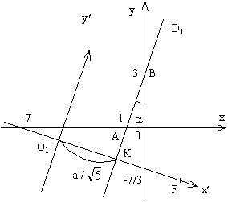

П 9 № 9
Написать уравнение гиперболы, если известны ее эксцентриситет
фокус и
уравнение директрисы .
РЕШЕНИЕ
Уравнение директрисы позволяет
заключить, что новая ось координат  имеет вид
имеет вид  , проходит через точку , значит, откуда
и задается
уравнением
, проходит через точку , значит, откуда
и задается
уравнением
имеет вид , проходит через точку , значит, откуда
и задается
уравнением Пусть начало новой системы координат находится в точке .
Найдем координаты точки как
координаты точки пересечения директрисы и
оси из системы
Геометрические свойства гиперболы, которая в новых осях
координат имеет вид  позволяют
найти как расстояние от фокуса до директрисы .
позволяют
найти как расстояние от фокуса до директрисы .
позволяют
найти как расстояние от фокуса до директрисы .так как
Значение а находим из уравнения и
получаем
При этом .
Уравнение гиперболы в новых координатах имеет вид
Координаты нового центра найдем, зная что точка делит отрезок в отношении
Из :,
Так как поворот совершается на угол :
,
то формулы преобразований координат (см. (5) в п.4.3) принимают вид:
,
и уравнение гиперболы принимает вид
или .
